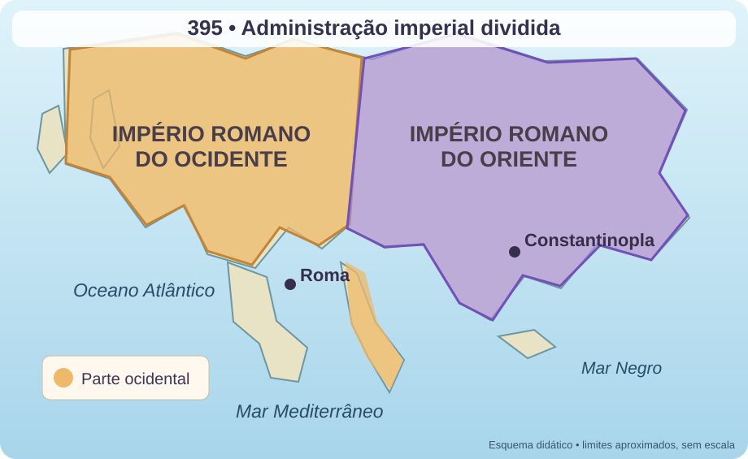

Escolha uma parada da aventura
Clique nos cartões para descobrir o que aconteceu e como as pessoas viviam.
🧠 Mapa mental interativo
Clique em um ramo e depois em cada palavra para revelar um novo nível do mapa, com explicações e conexões históricas.
⏳ Linha do tempo
Descubra a ordem dos acontecimentos. Uma mudança histórica acontece ao longo de muitos anos!
Selecione um acontecimento para descobrir por que ele foi importante.
🏡 Como era viver na Idade Média?
Escolha um cenário e conheça diferentes experiências da sociedade medieval.
📖 Dicionário do viajante
Pesquise os conceitos mais importantes do capítulo.
🧩 Laboratório de História
Relacione pistas e conceitos históricos.
🗺️ Atlas e laboratório de fontes
Compare mapas, observe imagens e investigue o passado. Os esquemas em português são representações didáticas simplificadas, não mapas originais da época e nem reproduções exatas de fronteiras. Consulte também os mapas históricos indicados nas fontes.
Roma mudou: o que aconteceu com seu território?
Selecione uma data e observe o mapa. Compare as regiões e identifique os reinos. Os esquemas apresentam limites aproximados para facilitar o estudo.

395: duas partes do Império
O governo do Império Romano estava dividido entre as partes ocidental e oriental. Isso não significou o desaparecimento imediato da cultura romana.
Onde estão o território ocidental e o oriental? Que cores os diferenciam?
🔍 Detetives da História
Analise uma cena ilustrada e teste sua interpretação. Essas pinturas são reconstruções artísticas modernas, não fotografias da época.
🎯 Desafio do castelo
Responda às questões e confira as explicações. Você pode tentar quantas vezes quiser!